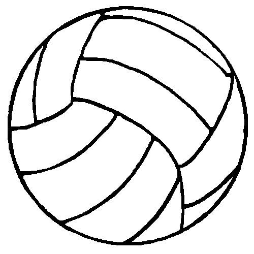
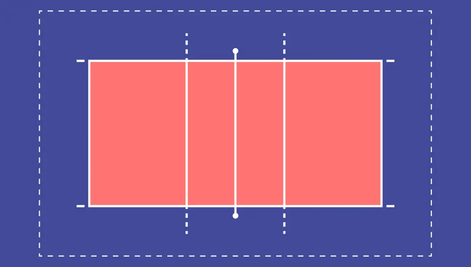

Além disso, era menos exigente em termos físicos do que o basquetebol - uma vez que os jogadores não precisavam correr ao longo do jogo por toda a quadra. O vôlei, no entanto, era muito completo, pois compreendia uma série de exercícios benéficos para a saúde. Outros fatores que contribuíram para a invenção do vôlei foram a intenção de Morgan em inovar as suas aulas para cativar mais alunos. Além disso, o fato de o vôlei poder ser praticado no inverno rigoroso dos Estados Unidos, já que era disputado em quadra fechada. O próximo desafio foi a bola usada no jogo. Utilizando primeOs primeiros jogos de vôlei foram realizados com uma bola constituída por uma câmara de bola de basquete coberta de couro. ... A primeira quadra de voleibol tinha cerca de 15 metros de comprimento por 7,60 metros de largurairamente apenas a câmara de ar da bola de basquete, Morgan tentou deixar a bola menor e mais leve. Mas isso não era suficiente, e Morgan solicitou à firma A.G. Spalding & Bros. a criação de uma bola específica, de modo que após várias tentativas conseguiram obter uma bola com o tamanho e peso ideais para a prática do voleibol.

1895: o voleibol é criado nos EUA. 1900: o esporte é ensinado no Canadá. 1910: o vôlei chega à América do Sul. 1915: a primeira partida de vôlei é disputada no Brasil. Os primeiros jogos de vôlei foram realizados com uma bola constituída por uma câmara de bola de basquete coberta de couro. ... A primeira quadra de voleibol tinha cerca de 15 metros de comprimento por 7,60 metros de largura 1920: surge o vôlei de praia no Havaí. 1930: o vôlei de praia começa a ser praticados nas praias brasileiras. 1947: fundação da Federação Internacional de Voleibol (FIVB). 1949: realização do primeiro campeonato mundial de voleibol masculino, com vitória russa. 1951: disputa do primeiro campeonato sul-americano de vôlei. 1952: primeiro campeonato mundial de voleibol feminino, com vitória da antiga União Soviética. 1964: inclusão do vôlei como esporte olímpico. A Rússia foi o primeiro campeão olímpico do vôlei masculino. 1976: primeira transmissão televisiva de um jogo de vôlei. 1984: conquista da primeira medalha olímpica de vôlei por um país sul-americano. O feito foi obtido pelo Brasil, que ganhou a medalha de prata. 1992: o Brasil conquista sua primeira medalha de ouro no vôlei nos Jogos Olímpicos de Barcelona.
.jpg)
A primeira bola usada no vôlei era muito pesada, motivo pelo qual Morgan solicitou que fosse criada uma bola com tamanho e peso específicos para essa prática esportiva. Ela deveria ter em média 67 cm de circunferência e pesar no máximo 340 g. Hoje, a bola tem uma circunferência de 65 cm a 67 cm, com peso entre 260 e 280 g. A bola deve ser colorida para ser identificada mais facilmente. A quadra tinha 15 metros de comprimento por 7,60 metros de largura. Quanto à rede, media 8,3 m de comprimento com uma largura de 0,61 m, com 1,98 m a partir do chão.
Uma quadra de vôlei profissional deve ser constituída por um retângulo de 18 metros por 9 metros, além de uma zona livre de pelo menos três metros ao redor de todo o espaço de jogo, sem considerar placas de patrocinadores, espaço da imprensa ou assentos da torcida
visite o site globo
visite o site google
visite o site globo
alessandro e nataly